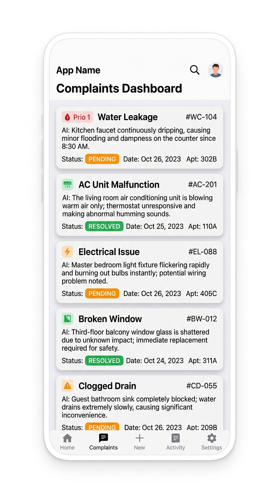

An AI-powered platform that takes apartment maintenance complaints from chaos to resolution — automatically.
We pull every moving part of your community's complaint lifecycle into one intelligent platform.
Residents upload a photo or video. Our multimodal AI instantly generates a detailed description, determines the category (Plumbing, Electrical, Civil…), and assigns a priority level — no forms to fill.
Learn more →Review AI-processed complaints, override generated tags, assign workers, and monitor resolution times — all from a single pane of glass.
Learn more →Maintenance staff receive assignments in real-time, update job status on the go, and upload completion proof to close the loop.
Learn more →Distinct dashboards for Residents, Managers, and Maintenance Staff. JWT-based security ensures users only see what matters to them.
Powered by GPT-4 / Gemini API to analyze images and videos, auto-generate descriptions, categorize issues, and estimate priority.
Complaints move through Pending → Assigned → In Progress → Resolved → Closed. Every stakeholder stays in the loop, always.
Resolution times, category trends, recurring issues, staff performance — everything to make data-driven decisions at a glance.
Automated alerts for overdue tasks. If a ticket sits idle for 24 hours, workers and managers are notified instantly.
Full audit trail for every ticket — from initial submission and AI analysis to worker assignment, resolution, and resident rating.
The resident uploads an image or video of the maintenance issue through the Simplifix app.
Our backend triggers a background AI task that generates a description, determines the category, and assigns a priority level.
The facility manager reviews the AI-processed ticket, verifies the details, and assigns it to the right maintenance worker.
The assigned worker sees the ticket, performs the repair, updates the status, and uploads proof of completion.
The resident checks the resolved status, confirms the fix, and provides a rating to officially close the complaint.
Simplifix delivers a tailored experience for each person in the maintenance workflow.
Simplifix is a cross-platform mobile application built with Expo and React Native. Residents, managers, and workers all share one app — but see only the experience designed for them.

Simplifix is an AI-assisted complaint management system designed for residential apartment communities. It streamlines the entire lifecycle of maintenance complaints — from submission through AI-powered triage to resolution and resident verification.
When a resident uploads an image or video, our backend triggers an asynchronous task using Celery and Redis. The media is passed to a multimodal AI (GPT-4 / Gemini) which generates a detailed description, categorizes the issue (Plumbing, Electrical, Civil, etc.), and estimates a priority level (Low, Medium, High, Critical).
Simplifix uses Role-Based Access Control (RBAC) to manage three user types: Residents who submit and track complaints, Facility Managers who review, triage, and assign work, and Maintenance Staff who execute repairs and provide proof of completion.
The frontend is built with React Native and Expo for cross-platform mobile development. The backend uses FastAPI with PostgreSQL, SQLAlchemy, and Alembic. AI integration uses GPT-4 or Google Gemini API. Asynchronous processing is handled by Celery with Redis.
Yes. While the AI populates the description, category, and priority automatically, managers have full authority to review and manually override any AI-generated tags before assigning a complaint to maintenance staff.
Yes. Simplifix is built with React Native and Expo, enabling cross-platform development for both Android and iOS from a single codebase. It also supports a web target for broader accessibility.
Join the future of intelligent apartment management. Simplifix turns frustration into resolution — powered by AI.